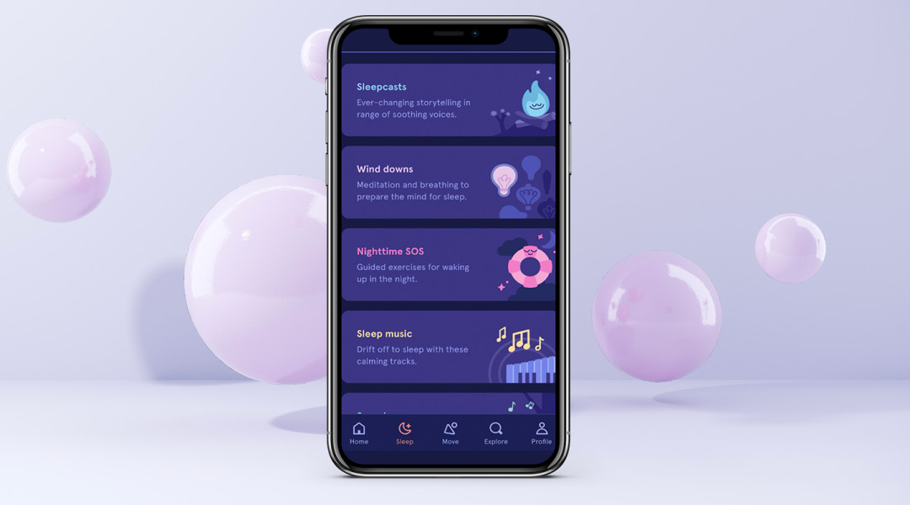
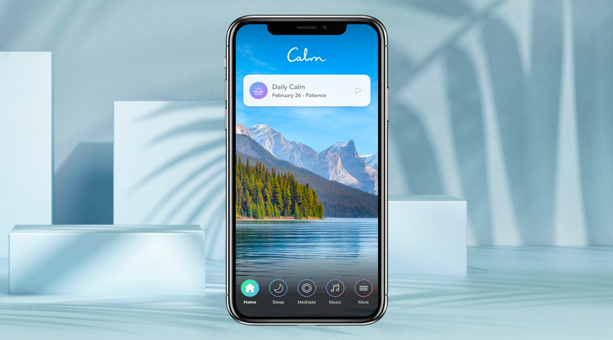
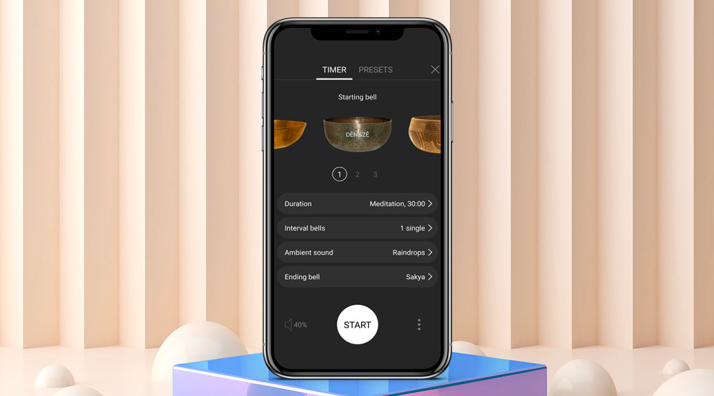
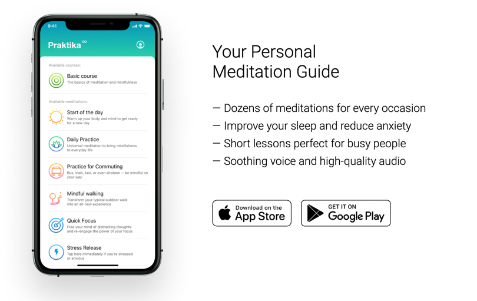
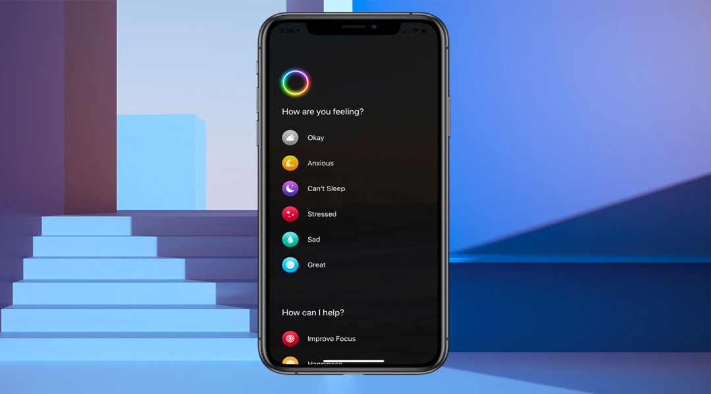

Подборка приложений для медитации
Давно хотите начать медитировать, но не знаете, как лучше всего подступиться к
практикам осознанного внимания и расслабления? Все проще, чем кажется: половина медитирующих россиян делают
это с помощью мобильных приложений. Мы изучили их разнообразие и выбрали 5 лучших.

1. Headspace
IOS Android
Пожалуй, самое известное приложение для медитации, которое создал бывший буддийский монах и эксперт
в области майндфулнесс Энди Паддикомб. Внутри – максимально разнообразный спектр техник: более сотни
медитаций с гидом, мини-медитации, звуки сна, SOS-медитации для чрезвычайных ситуаций, для детей.
Каждый «пакет» или курс включает в себя несколько коротких анимаций, которые объясняют ключевые
понятия и различные техники, используемые в выбранной вами медитации. Изюминка этого приложения –
возможность выбирать продолжительность каждой медитации под руководством гида. Headspace предложит
10-минутную, 15-минутную или 20-минутную медитацию в зависимости от вашего уровня опыта или времени,
которое вы сами готовы выделить для медитации. Еще одно интересное решение – минутные медитации,
если вам вдруг захотелось привести мысли в порядок здесь и сейчас.
2. Calm
IOS Android
Приложение Calm с образцовым и простым в использовании интерфейсом отлично подойдет для тех, кто уже
чувствует себя уверенно в своей практике медитации. Приложение предоставляет сеансы медитации под
руководством гида от 3 до 25 минут — тут и практики для снятия беспокойства и стресса, и упражнения,
направленных на концентрацию внимания во время работы. Большая аудио-библиотека подойдет для тех,
кто любит работать, спать или даже медитировать под звуки природы или приятную музыку. В разделе
Meditations можно выбрать медитацию на одном из 22 языков — на русском их не так много, но они есть.
Каждый день появляются новые медитации, есть трекеры прогресса, а также семидневные и 21-дневные
программы для начинающих. Также есть специальный раздел для сна, где на выбор представлено более 100
сказок на ночь для взрослых. Платный раздел Courses предлагает аудиокурсы от мастеров медитаций,
врачей и психологов. Каждый курс рассчитан на 10 дней и стоит 399 рублей для устройств на Android и
379 рублей на iOS.


3. Insight Timer
IOS Android
Приложение, которое использует 27% медитирующих с помощью мобильного телефона россиян, содержит
тысячи различных медитаций и своего рода мастер-классов от известных практиков и инструкторов
медитации — Тары Бранч, Сэма Харриса, Дженнифер Пирси и даже Моби. Некоторые курсы в приложении
поднимают такие темы, как преодоление навязчивого мышления и создание утренних ритуалов. Особенность
Insight Timer — таймеры медитации с интервальными колокольчиками, которые подойдут для тех, кому
нравится медитировать без инструкций или указаний. Вы сами выбираете как долго вы хотите
практиковаться, какой стиль вам нравится (например, сканирование тела, уменьшение чувства
беспокойства/стресса и т.д.). В целом это приложение англоязычное, но в нём есть и курсы на русском
языке. Еще одна изюминка Insight Timer — трекер, который позволяет вам планировать и отслеживать
свой прогресс.
4. Практика
IOS
Российское мобильное приложение для медитации без эзотерики «Практика», которое запустили в 2019
году предприниматели Антон Шаяхов, Дмитрий Афонин и Даниил Косинский, предлагает «простые и короткие
уроки медитации» для борьбы со стрессом, бессонницей и демотивацией. Основа приложения с простым и
удобным интерфейсом — пошаговые уроки с гуру медитации, которые объясняют основы практик и учат
применять разнообразные техники. Цель «Практики» заключается в том, чтобы каждый человек благодаря
нему мог найти своего гуру медитации и провести с ним персональный сеанс. В приложении вы найдете
курсы по цифровому детоксу и снижению стресса, сможете пройти медитацию в разных обстоятельствах —
например, попробовать осознанную прогулку, практику в транспорте и визуализацию для сна.


5. Aura
IOS Android
Инструкторы приложения Aura разделяют различные точки зрения, техники и учения, так что вы точно
найдете медитацию, которая понравится именно вам. Кроме того, приложение предоставляет ежедневные
микромедитации, которые длятся не более 3 минут, наставничество, звуки природы, истории и музыку,
которые подбирает приложение в зависимости от настроения, которое вы указываете при его запуске
(Aura отслеживает данные о вашем душевном состоянии и анализирует его). Приложение на английском, но
уровень языка не очень сложный, все доступно и понятно. В Aura eсть возможность выбрать длительность
нужной для вас медитации: 3 минуты, 10-20 минут, 1 час и даже многочасовые практики.